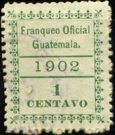
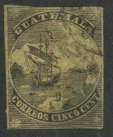
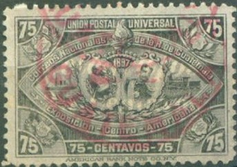
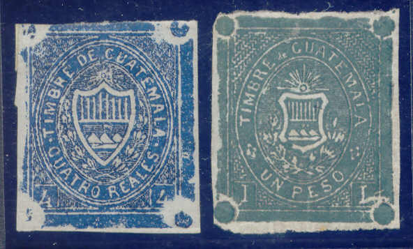

(Forgeries)
Return To Catalogue - Guatemala
Note: on my website many of the
pictures can not be seen! They are of course present in the
catalogue;
contact me if you want to purchase the catalogue.

1 c green 2 c red 5 c blue 10 c lilac 25 c orange
Value of the stamps |
|||
vc = very common c = common * = not so common ** = uncommon |
*** = very uncommon R = rare RR = very rare RRR = extremely rare |
||
| Value | Unused | Used | Remarks |
| 1 c | *** | *** | |
| 2 c | ** | ** | |
| 5 c | ** | ** | |
| 10 c | ** | ** | |
| 25 c | ** | ** | |
(Forgeries)
(Reduced sizes, forgeries with cancels)
In the genuine stamps, the horizontal and vertical lines with ornaments don't touch each other in the corners. Also the diagonal corner element does not touch the horizontal or vertical lines with ornaments.

Example
These stamps were made whenever they were needed on the spot.
(Reduced sizes)
This overprint is actually more a cancel, since it was applied by a post official when the letters were brought in.
The following stamps are bogus stamps:
These bogus stamps were issued in 1867, four years before the first real stamps of Guatemala were issued. There were made by Alan Taylor, the famous stamp forger of Boston. Taylor pretended to be Don Alberto de Bario of Guatemala accompagnied by Charles Lyford (as his interpreter?). They both went to the Holland Printing Company in Boston and ordered stamps for Guatemala. Only one year later the fraud was detected. Album Weeds says there are at least the following values 5 c black on yellow, green, blue and brown. There even exist forgeries of this bogus issue! I think the above stamps are the original bogus issue, the 'originals' are perforated 12, the forgeries are irregularly pin perforated. I've seen a green 5 c forgery with a Spanish Arana cancel. Other forgeries in this type:


Forgeries. Note the white line after the last "A" in
"GUATEMALA"


Forgery type, the design is not as nicely done. Note the Spanish
spider cancel, the Roman States grill cancel and the "VF" cancel.

And another very primitive forgery
(Reduced sizes)
1/4 r black 1/2 r green 1 r blue 2 r red
I have seen these cut squares perforated (the 1/4 r and the 2 r), bogus issues?
Bogus?
2 c brown on yellow
(Reduced sizes)
Without 'UPU' in horn 5 c blue 10 c red Overprinted 'CORREOS NACIONALES' 'DOS CENTAVOS' on 5 c blue 'SEIS CENTAVOS' (red) on 5 c blue 'SEIS CENTAVOS' and arms on 5 c blue
3 c blue
3 c red
1 c brown
Senf forgery of the first postcard of
Guatamala given free with No 1 issue of the 'Illustrirtem
Briefmarken - Journal' of 1888
Some postage stamps of 1897 were overprinted 'Telegrafos' in 1898:
The following stamps exist overprinte in this way:
2 c black on grey (black or red overprint) 6 c black on orange (black or red overprint) 10 c black on blue (black or red overprint) 25 c on 12 c black on red (also exists with inverted overprint) 25 c on 18 c black on grey (red overprint) 25 c on 75 c black on grey 25 c on 150 c black on red (red overprint) 50 c black on brown (black or red overprint) 100 c black on green (black or red overprint)
Value of these stamps c to ***.

(Inverted overprint)

In 1919 a special Telegraph stamp was issued:

(Fiscal stamp of 1919, 'TELEGRAFOS NACIONALES TIMBRE DE
RECONSTRUCCION')

4 r and 1 P fiscal stamps
1/2 r red (two types?), 2 r orange, 4 r blue, 1 P green, 2 P red, 3 P brown.
The following values were issued: 1 (UN) c black,
5 (CINCO) c red, 10 (DIEZ) violet, 20 (Veinte) c violet, 1 (UN) P
green, 5 (CINCO) P blue and 10 (DIEZ) P yellow.
Similar fiscal stamps with inscription '1883-84' were issued in
1883: 1 c black, 5 c red, 10 c violet, 20 c violet, 1 P green, 5
P blue and 10 P olive.
In 1885 the design was again changed with inscription '1885-86'
in the values: 1 c black, 5 c red, 10 c brown, 20 c violet, 1 P
green, 5 P blue and 10 P green.
Two more values were issued in 1886 with inscription '1886-87': 5
c red and 20 c violet.
(Sorry, no picture available yet)
The following values exist: 1 c yellow, 5 c brown, 10 c green, 20 c blue and 1 P black.
(Sorry, no picture available yet)
With inscription '1889 1890' were issued the
values: 1 c brown and blue, 5 c green and blue, 10 c violet and
blue, 20 c red and blue, 1 P orange and blue, 5 P blue and red
and 10 P violet and red.
With inscription '1891 1892' were issued the values: 1 c yellow,
5 c red, 10 c orange, 20 c blue, 1 P green, 5 P violet and 10 P
brown.
The following values were issued; 1 c green, 5 c blue, 10 c grey, 20 c orange, 1 P brown, 5 P red and 10 P violet.
The following values exist: 1 c blue, 5 c brown, 10 c green, 25 c black, 50 c orange, 1 P brown, 5 P red, 10 P green, 25 P violet (larger size) and 50 P red (larger size).
These fiscal stamps exist with overprint '1901': 1 c blue (red or black overprint), 5 c brown, 50 c orange and 1 P brown. Furthermore surcharged with a value: 'VALE 5 CENTAVOS 1901' (two types) on 5 P, 5 c (blue) on 25 P, 5 c on 50 P, 10 c on 50 c, 10 c on 10 P, 10 c (blue) on 25 P, 25 c on 50 c, 25 c (red) on 1 P, 25 c on 10 P and 25 c on 50 P.

(Fiscal stamp of 1898, overprinted 'CORREOS NACIONALES')
Fiscal stamp of 1920(?).
{kind=link}
{kind=link}